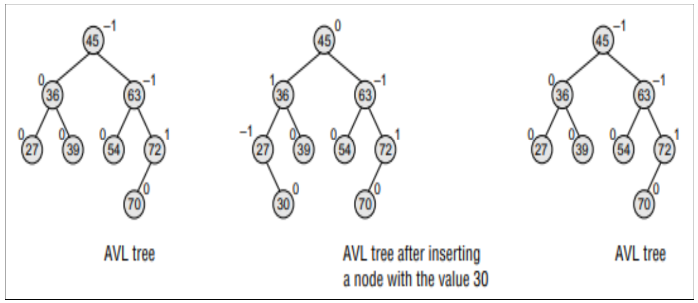
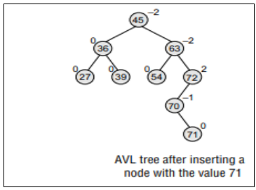
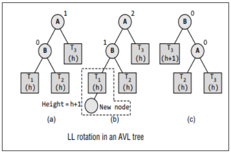
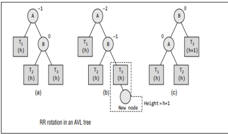
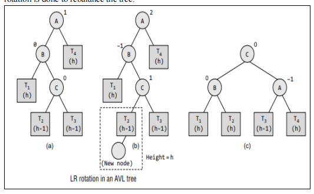
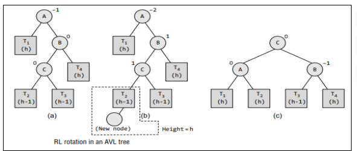
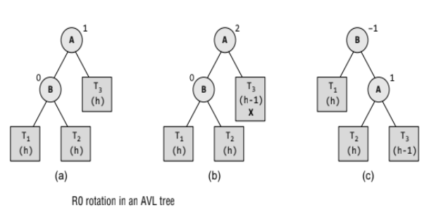
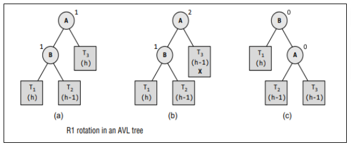
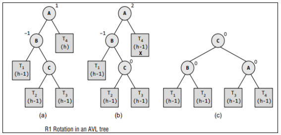

AVL Tree
AVL tree is a self-balancing binary search tree invented by G.M. Adelson-Velsky and E.M. Landis
in 1962. The tree is named AVL in honour of its inventors. In an AVL tree, the heights of the two
sub-trees of a node may differ by at most one. Due to this property, the AVL tree is also known as
a height-balanced tree. The key advantage of using an AVL tree is that it takes O(log n) time to
perform search, insert, and delete operations in an average case as well as the worst case because
the height of the tree is limited to O(log n).
The structure of an AVL tree is the same as that of a binary search tree but with a little difference.
In its structure, it stores an additional variable called the BalanceFactor. Thus, every node has a
balance factor associated with it. The balance factor of a node is calculated by subtracting the
height of its right sub-tree from the height of its left sub-tree. A binary search tree in which every
node has a balance factor of –1, 0, or 1 is said to be height balanced. A node with any other balance
factor is considered to be unbalanced and requires rebalancing of the tree.
• If the balance factor of a node is 1, then it means that the left sub-tree of the tree is one
level higher than that of the right sub-tree. Such a tree is therefore called as a left-heavy
tree
• If the balance factor of a node is 0, then it means that the height of the left sub-tree
(longest path in the left sub-tree) is equal to the height of the right sub-tree.
• If the balance factor of a node is –1, then it means that the left sub-tree of the tree is one
level lower than that of the right sub-tree. Such a tree is therefore called as a right-heavy
tree.
Operations on AVL Tree:
•Searching for a Node in an AVL Tree
Searching in an AVL tree is performed exactly the same way as it is performed in a binary search
tree. Due to the height-balancing of the tree, the search operation takes O(log n) time to complete.
Since the operation does not modify the structure of the tree, no special provisions are required .
• Inserting a New Node in an AVL Tree
Insertion in an AVL tree is also done in the same way as it is done in a binary search tree. In
the AVL tree, the new node is always inserted as the leaf node. But the step of insertion is usually
followed by an additional step of rotation. Rotation is done to restore the balance of the tree.
However, if insertion of the new node does not disturb the balance factor, that is, if the balance
factor of every node is still –1, 0, or 1, then rotations are not required. During insertion, the new
node is inserted as the leaf node, so it will always have a balance factor equal to zero. The only
nodes whose balance factors will change are those which lie in the path between the root of the
tree and the newly inserted node. The possible changes which may take place in any node on the
path are as follows:
• Initially, the node was either left- or right-heavy and after insertion, it becomes balanced
• Initially, the node was balanced and after insertion, it becomes either left- or right-heavy.
• Else, define a node pointer and initialize it with the front.
• Initially, the node was heavy (either left or right) and the new node has been inserted in the
heavy sub-tree, thereby creating an unbalanced sub-tree. Such a node is said to be a critical
node.
Consider the AVL tree given in Fig. 10.36. If we insert a new node with the value 30, then the
new tree will still be balanced and no rotations will be required in this case. Look at the tree
given in Fig. 10.37 which shows the tree after inserting node 30.

Let us take another example to see how insertion can disturb the balance factors of the nodes
and how rotations are done to restore the AVL property of a tree. Look at the tree given in Fig

After inserting a new node with the value 71, the new tree will be as shown in Fig. 10.39. Note
that there are three nodes in the tree that have their balance factors 2, –2, and –2, thereby
disturbing the AVLness of the tree. So, here comes the need to perform rotation. To perform
rotation, our first task is to find the critical node. Critical node is the nearest ancestor node on
the path from the inserted node to the root whose balance factor is neither –1, 0, nor 1. In the
tree given above, the critical node is 72. The second task in rebalancing the tree is to determine
which type of rotation has to be done. There are four types of rebalancing rotations and
application of these rotations depends on the position of the inserted node with reference to the
critical node. The four categories of rotations are:
• LL rotation The new node is inserted in the left sub-tree of the left sub-tree of the
critical node.
• RR rotation The new node is inserted in the right sub-tree of the right sub-tree of the
critical node.
• LR rotation The new node is inserted in the right sub-tree of the left sub-tree of the
critical node
• RL rotation The new node is inserted in the left sub-tree of the right sub-tree of the
critical node.

LL Rotation: Let us study each of these rotations in detail. First, we will see where and
how LL rotation is applied. Consider the tree given in which shows an AVL
tree. Tree
(a) is an AVL tree. In tree
(b), a new node is inserted in the left sub-tree of the
left sub-tree of the critical node A (node A is the critical node because it is the closest
ancestor whose balance factor is not –1, 0, or 1), so we apply LL rotation as shown in tree
(c). While rotation, node B becomes the root, with T1 and A as its left and right child. T2
and T3 become the left and right sub-trees of A.
RR Rotation:Let us now discuss where and how RR rotation is applied. Consider the tree
given in which shows an AVL tree. Tree
(a) is an AVL tree. In tree
(b), a new
node is inserted in the right sub-tree of the right sub-tree of the critical node A (node A is
the critical node because it is the closest ancestor whose balance factor is not –1, 0, or 1),
so we
apply RR rotation as shown in tree.
(c). Note that the new node has now become a part of
tree T3 . While rotation, node B becomes the root, with A and T3 as its left and right child.
T1 and T2 become the left and right sub-trees of A.

LR and RL Rotations: Consider the AVL tree given in Fig. 10.44 and see how LR
rotation is done to rebalance the tree.

(a) is an AVL tree. In tree
(b) a new node is inserted in the right sub-tree of the left sub�tree of the critical node A (node A is the critical node because it is the closest ancestor whose
balance factor is not –1, 0 or 1), so we apply LR rotation as shown in tree
(c) Note that the new
node has now become a part of tree T2 . While rotation, node C becomes the root, with B and A
as its left and right children. Node B has T1 and T2 as its left and right sub-trees and T3 and T4
become the left and right sub-trees of node A. Now, consider the AVL tree given in Fig. 10.46 and
see how RL rotation is done to rebalance the tree

(a) is an AVL tree. In tree
(b), a new node is inserted in the left sub-tree of the right sub-tree
of the critical node A (node A is the critical node because it is the closest ancestor whose balance
factor is not –1, 0, or 1), so we apply RL rotation as shown in tree
(c). Note that the new node has
now become a part of tree T2 . While rotation, node C becomes the root, with A and B as its left
and right children. Node A has T1 and T2 as its left and right sub-trees and T3 and T4 become the
left and right sub-trees of node B.
• Deleting a Node from an AVL Tree:
Deletion of a node in an AVL tree is similar to that of binary search trees. But it goes one step
ahead. Deletion may disturb the AVLness of the tree, so to rebalance the AVL tree, we need to
perform rotations. There are two classes of rotations that can be performed on an AVL tree after
deleting a given node. These rotations are R rotation and L rotation. On deletion of node X from
the AVL tree, if node A becomes the critical node (closest ancestor node on the path from X to the
root node that does not have its balance factor as 1, 0, or –1), then the type of rotation depends on
whether X is in the left sub-tree of A or in its right sub-tree. If the node to be deleted is present in
the left sub-tree of A, then L rotation is applied, else if X is in the right sub-tree, R rotation is
performed. Further, there are three categories of L and R rotations. The variations of L rotation are
L–1, L0, and L1 rotation. Correspondingly for R rotation, there are R0, R–1, and R1 rotations. In
this section, we will discuss only R rotation. L rotations are the mirror images of R rotations.
R0 Rotation: Let B be the root of the left or right sub-tree of A (critical node). R0 rotation is
applied if the balance factor of B is 0. This is illustrated in Fig.
critical node A (node A is the critical node because it is the closest ancestor whose balance factor
is not –1, 0, or 1). Since the balance factor of node B is 0, we apply R0 rotation as shown in tree
(c).During the process of rotation, node B becomes the root, with T1 and A as its left and right
child. T2 and T3 become the left and right sub-trees of A.

R1 Rotation :Let B be the root of the left or right sub-tree of A (critical node). R1 rotation is
applied if the balance factor of B is 1. Observe that R0 and R1 rotations are similar to LL rotations;
the only difference is that R0 and R1 rotations yield different balance factors. This is illustrated in
Fig. 10.50. Tree
(a) is an AVL tree. In tree
(b), the node X is to be deleted from the right sub-tree
of the critical node A (node A is the critical node because it is the closest ancestor whose balance
factor is not –1, 0, or 1). Since the balance factor of node B is 1, we apply R1 rotation as shown in
tree
(c). During the process of rotation, node B becomes the root, with T1 and A as its left and
right children. T2 and T3 become the left and right sub-trees of A.

R–1 Rotation : Let B be the root of the left or right sub-tree of A (critical node). R–1 rotation is applied if the
balance factor of B is –1. Observe that R–1 rotation is similar to LR rotation. This is illustrated in
Fig. 10.52.

(a) is an AVL tree. In tree
(b), the node X is to be deleted from the right sub-tree of the
critical node A (node A is the critical node because it is the closest ancestor whose balance factor
is not –1, 0 or 1). Since the balance factor of node B is –1, we apply R–1 rotation as shown in
tree
(c).
While rotation, node C becomes the root, with T1 and A as its left and right child. T2 and T3
become the left and right sub-trees of A.
#include<stdio.h>
#include<stdlib.h>
#define FALSE 0
#define TRUE 1
struct node
{
struct node *lchild;
int info;
struct node *rchild;
int balance;
};
void inorder(struct node *ptr);
struct node *RotateLeft(struct node *pptr);
struct node *RotateRight(struct node *pptr);
struct node *insert(struct node *pptr, int ikey);
struct node *insert_left_check(struct node *pptr, int *ptaller);
struct node *insert_right_check(struct node *pptr, int *ptaller);
struct node *insert_LeftBalance(struct node *pptr);
struct node *insert_RightBalance(struct node *pptr);
struct node *del(struct node *pptr, int dkey);
struct node *del_left_check(struct node *pptr, int *pshorter);
struct node *del_right_check(struct node *pptr, int *pshorter);
struct node *del_LeftBalance(struct node *pptr,int *pshorter);
struct node *del_RightBalance(struct node *pptr,int *pshorter);
main()
{
int choice,key;
struct node *root = NULL;
while(1)
{
printf("\n");
printf("1.Insert\n");
printf("2.Delete\n");
printf("3.Inorder Traversal\n");
printf("4.Quit\n");
printf("Enter your choice : ");
scanf("%d",&choice);
switch(choice)
{
case 1:
printf("Enter the key to be inserted : ");
scanf("%d",&key);
root = insert(root,key);
break;
case 2:
printf("Enter the key to be deleted : ");
scanf("%d",&key);
root = del(root,key);
break;
case 3:
inorder(root);
break;
case 4:
exit(1);
default:
printf("Wrong choice\n");
}/*End of switch */
}/*End of while */
}/*End of main()*/
struct node *insert(struct node *pptr, int ikey)
{
static int taller;
if(pptr==NULL) /*Base case*/
{
pptr = (struct node *) malloc(sizeof(struct node));
pptr->info = ikey;
pptr->lchild = NULL;
pptr->rchild = NULL;
pptr->balance = 0;
taller = TRUE;
}
else if(ikey < pptr->info) /*Insertion in left subtree*/
{
pptr->lchild = insert(pptr->lchild, ikey);
if(taller==TRUE)
pptr = insert_left_check( pptr, &taller );
}
else if(ikey > pptr->info) /*Insertion in right subtree */
{
pptr->rchild = insert(pptr->rchild, ikey);
if(taller==TRUE)
pptr = insert_right_check(pptr, &taller);
}
else /*Base Case*/
{
printf("Duplicate key\n");
taller = FALSE;
}
return pptr;
}/*End of insert( )*/
struct node *insert_left_check(struct node *pptr, int *ptaller )
{
switch(pptr->balance)
{
case 0: /* Case L_A : was balanced */
pptr->balance = 1; /* now left heavy */
break;
case -1: /* Case L_B: was right heavy */
pptr->balance = 0; /* now balanced */
*ptaller = FALSE;
break;
case 1: /* Case L_C: was left heavy */
pptr = insert_LeftBalance(pptr); /* Left Balancing */
*ptaller = FALSE;
}
return pptr;
}/*End of insert_left_check( )*/
struct node *insert_right_check(struct node *pptr, int *ptaller )
{
switch(pptr->balance)
{
case 0: /* Case R_A : was balanced */
pptr->balance = -1; /* now right heavy */
break;
case 1: /* Case R_B : was left heavy */
pptr->balance = 0; /* now balanced */
*ptaller = FALSE;
break;
case -1: /* Case R_C: Right heavy */
pptr = insert_RightBalance(pptr); /* Right Balancing */
*ptaller = FALSE;
}
return pptr;
}/*End of insert_right_check( )*/
struct node *insert_LeftBalance(struct node *pptr)
{
struct node *aptr, *bptr;
aptr = pptr->lchild;
if(aptr->balance == 1) /* Case L_C1 : Insertion in AL */
{
pptr->balance = 0;
aptr->balance = 0;
pptr = RotateRight(pptr);
}
else /* Case L_C2 : Insertion in AR */
{
bptr = aptr->rchild;
switch(bptr->balance)
{
case -1: /* Case L_C2a : Insertion in BR */
pptr->balance = 0;
aptr->balance = 1;
break;
case 1: /* Case L_C2b : Insertion in BL */
pptr->balance = -1;
aptr->balance = 0;
break;
case 0: /* Case L_C2c : B is the newly inserted
node */
pptr->balance = 0;
aptr->balance = 0;
}
bptr->balance = 0;
pptr->lchild = RotateLeft(aptr);
pptr = RotateRight(pptr);
}
return pptr;
}/*End of insert_LeftBalance( )*/
struct node *insert_RightBalance(struct node *pptr)
{
struct node *aptr, *bptr;
aptr = pptr->rchild;
if(aptr->balance == -1) /* Case R_C1 : Insertion in AR */
{
pptr->balance = 0;
aptr->balance = 0;
pptr = RotateLeft(pptr);
}
else /* Case R_C2 : Insertion in AL */
{
bptr = aptr->lchild;
switch(bptr->balance)
{
case -1: /* Case R_C2a : Insertion in BR */
pptr->balance = 1;
aptr->balance = 0;
break;
case 1: /* Case R_C2b : Insertion in BL */
pptr->balance = 0;
aptr->balance = -1;
break;
case 0: /* Case R_C2c : B is the newly inserted node */
pptr->balance = 0;
aptr->balance = 0;
}
bptr->balance = 0;
pptr->rchild = RotateRight(aptr);
pptr = RotateLeft(pptr);
}
return pptr;
}/*End of insert_RightBalance( )*/
struct node *RotateLeft(struct node *pptr)
{
struct node *aptr;
aptr = pptr->rchild; /*A is right child of P*/
pptr->rchild = aptr->lchild; /*Left child of A becomes right child of P */
aptr->lchild = pptr; /*P becomes left child of A*/
return aptr; /*A is the new root of the subtree initially rooted at P*/
}/*End of RotateLeft( )*/
struct node *RotateRight(struct node *pptr)
{
struct node *aptr;
aptr = pptr->lchild; /*A is left child of P */
pptr->lchild = aptr->rchild; /*Right child of A becomes left child of P*/
aptr->rchild = pptr; /*P becomes right child of A*/
return aptr; /*A is the new root of the subtree initially rooted at P*/
}/*End of RotateRight( )*/
struct node *del(struct node *pptr, int dkey)
{
struct node *tmp, *succ;
static int shorter;
if( pptr == NULL) /*Base Case*/
{
printf("Key not present \n");
shorter = FALSE;
return(pptr);
}
if( dkey < pptr->info )
{
pptr->lchild = del(pptr->lchild, dkey);
if(shorter == TRUE)
pptr = del_left_check(pptr, &shorter);
}
else if( dkey > pptr->info )
{
pptr->rchild = del(pptr->rchild, dkey);
if(shorter==TRUE)
pptr = del_right_check(pptr, &shorter);
}
else /* dkey == pptr->info, Base Case*/
{
/*pptr has 2 children*/
if( pptr->lchild!=NULL && pptr->rchild!=NULL )
{
succ = pptr->rchild;
while(succ->lchild)
succ = succ->lchild;
pptr->info = succ->info;
pptr->rchild = del(pptr->rchild, succ->info);
if( shorter == TRUE )
pptr = del_right_check(pptr, &shorter);
}
else
{
tmp = pptr;
if( pptr->lchild != NULL ) /*only left child*/
pptr = pptr->lchild;
else if( pptr->rchild != NULL) /*only right child*/
pptr = pptr->rchild;
else /* no children */
pptr = NULL;
free(tmp);
shorter = TRUE;
}
}
return pptr;
}/*End of del( )*/
struct node *del_left_check(struct node *pptr, int *pshorter)
{
switch(pptr->balance)
{
case 0: /* Case L_A : was balanced */
pptr->balance = -1; /* now right heavy */
*pshorter = FALSE;
break;
case 1: /* Case L_B : was left heavy */
pptr->balance = 0; /* now balanced */
break;
case -1: /* Case L_C : was right heavy */
pptr = del_RightBalance(pptr, pshorter); /*Right Balancing*/
}
return pptr;
}/*End of del_left_check( )*/
struct node *del_right_check(struct node *pptr, int *pshorter)
{
switch(pptr->balance)
{
case 0: /* Case R_A : was balanced */
pptr->balance = 1; /* now left heavy */
*pshorter = FALSE;
break;
case -1: /* Case R_B : was right heavy */
pptr->balance = 0; /* now balanced */
break;
case 1: /* Case R_C : was left heavy */
pptr = del_LeftBalance(pptr, pshorter ); /*Left Balancing*/
}
return pptr;
}/*End of del_right_check( )*/
struct node *del_LeftBalance(struct node *pptr,int *pshorter)
{
struct node *aptr, *bptr;
aptr = pptr->lchild;
if( aptr->balance == 0) /* Case R_C1 */
{
pptr->balance = 1;
aptr->balance = -1;
*pshorter = FALSE;
pptr = RotateRight(pptr);
}
else if(aptr->balance == 1 ) /* Case R_C2 */
{
pptr->balance = 0;
aptr->balance = 0;
pptr = RotateRight(pptr);
}
else /* Case R_C3 */
{
bptr = aptr->rchild;
switch(bptr->balance)
{
case 0: /* Case R_C3a */
pptr->balance = 0;
aptr->balance = 0;
break;
case 1: /* Case R_C3b */
pptr->balance = -1;
aptr->balance = 0;
break;
case -1: /* Case R_C3c */
pptr->balance = 0;
aptr->balance = 1;
}
bptr->balance = 0;
pptr->lchild = RotateLeft(aptr);
pptr = RotateRight(pptr);
}
return pptr;
}/*End of del_LeftBalance( )*/
struct node *del_RightBalance(struct node *pptr,int *pshorter)
{
struct node *aptr, *bptr;
aptr = pptr->rchild;
if (aptr->balance == 0) /* Case L_C1 */
{
pptr->balance = -1;
aptr->balance = 1;
*pshorter = FALSE;
pptr = RotateLeft(pptr);
}
else if(aptr->balance == -1 ) /* Case L_C2 */
{
pptr->balance = 0;
aptr->balance = 0;
pptr = RotateLeft(pptr);
}
else /* Case L_C3 */
{
bptr = aptr->lchild;
switch(bptr->balance)
{
case 0: /* Case L_C3a */
pptr->balance = 0;
aptr->balance = 0;
break;
case 1: /* Case L_C3b */
pptr->balance = 0;
aptr->balance = -1;
break;
case -1: /* Case L_C3c */
pptr->balance = 1;
aptr->balance = 0;
}
bptr->balance = 0;
pptr->rchild = RotateRight(aptr);
pptr = RotateLeft(pptr);
}
return pptr;
}/*End of del_RightBalance( )*/
void inorder(struct node *ptr)
{
if(ptr!=NULL)
{
inorder(ptr->lchild);
printf("%d ",ptr->info);
inorder(ptr->rchild);
}
}/*End of inorder()*/